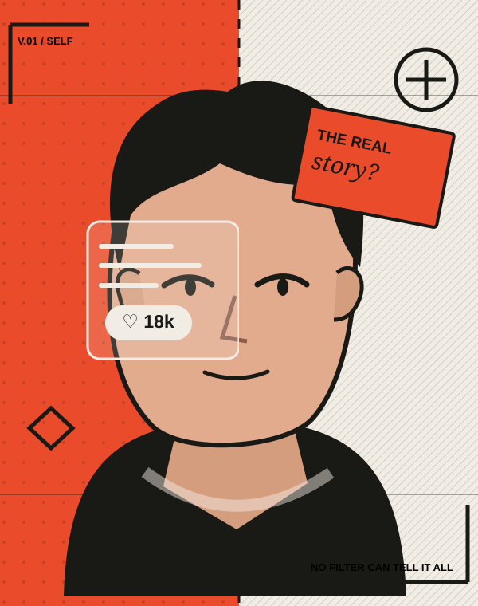
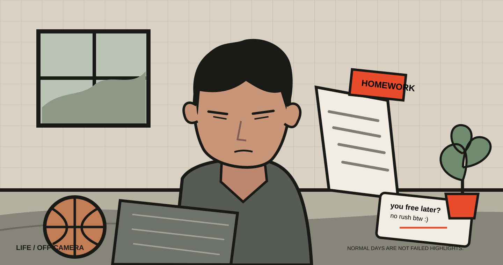
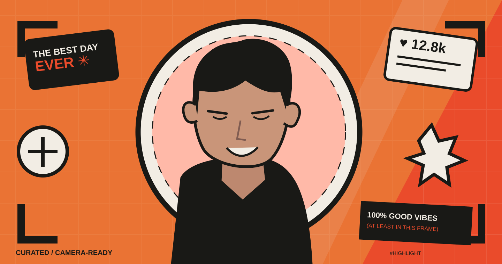

say social media makes them feel more connected to what's happening in friends' lives.
US TEENS / PEW RESEARCH / 2025YOUR FACE. YOUR FEED. YOUR STORY?
WHO AMI ONLINE?
The internet knows your highlights.
But does it know you?

PUBLIC VERSION ↗PRIVATE VERSION ↘01 / THE MIRRORDRAG TO REVEAL
THE FIRST EXPERIMENT
SAME PERSON.
DIFFERENT STORY.
A FACE IS NOT A FULL LIFE.
What gets posted is a choice. What gets left out is a life. Drag the divider to explore the distance between a carefully chosen moment and everything around it.
THE MIRROR / INTERACTIVE02 VERSIONS · 01 PERSON


WHAT GETS POSTED ↖
WHAT YOU DON'T SEE ↗
THINK ABOUT IT ↗
When you compare your whole day with someone else's best fifteen seconds, are you even comparing the same thing?
Not everything online is staged, and sharing your wins can be positive. The important part is remembering that one post rarely tells a complete story.
02 / THE FEEDCHOOSE WHAT YOU SEE
YOU'RE IN THE DRIVER'S SEAT (SORT OF).
THE FEED
IS A FILTER.
An algorithm doesn't know your entire identity. It ranks signals. This is a simplified, fictional feed experiment—not a reproduction of any platform's real algorithm.
CHOOSE A LENS TO REORDER THE SAME POSTS.
WHAT SHOULD THE FEED PRIORITISE?
NO, YOUR FEED ISN'T YOUR PERSONALITY.IT IS A WINDOW WITH AN EDITOR.↓ KEEP GOING
03 / THE RECEIPTSREAL DATA, NOT JUST OPINIONS
THE GOOD AND THE COMPLICATED
BOTH THINGS
CAN BE TRUE.
Social media can help people feel connected and creative. It can also create pressure. These findings describe US teens in one survey—not every teen and not a cause-and-effect experiment.
say social media provides a place to show their creative side.
US TEENS / PEW RESEARCH / 2025say social media makes them feel pressure to post popular content.
US TEENS / PEW RESEARCH / 2025Source: Pew Research Center, “Social Media and Teens' Mental Health” (22 April 2025) ↗. Online survey of 1,391 US teens and parents, conducted 18 September–10 October 2024. The percentages above refer to surveyed teenagers' responses.
In Australia: Since 10 December 2025, certain age-restricted social media services must take steps to prevent under-16s from having accounts. This educational simulation never requires a social media account. Read eSafety's explanation ↗
05 / YOUR CODEMAKE SOMETHING USEFUL
DON'T JUST LEAVE WITH A TAKEAWAY.
WRITE YOUR
OWN RULES.
You don't need to be a perfect digital citizen. Choose three small habits that make online spaces better for you and the people around you.
CHOOSE EXACTLY THREE / 0 OF 3 PICKED
Choose three ideas to generate your manifesto.
PERSONAL FIELD GUIDEISSUE 001 ↗
I AM
MORE
THAN MY
FEED.
MORE
THAN MY
FEED.
01 / YOUR FIRST RULE GOES HERE02 / YOUR SECOND RULE GOES HERE03 / YOUR THIRD RULE GOES HERE
WHO AM I ONLINE?MADE BY ME. NOT AN ALGORITHM.
Your choices stay in this page only. No account, no tracking, no upload.
THE END IS A BEGINNING.
YOU ARE
NOT CONTENT.
You're a whole person. The internet only ever gets a glimpse.
BACK TO THE BEGINNING ↗